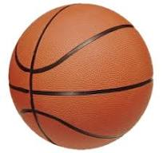

Basketball
Basketball is another widely popular sport around the world. It is played by two teams of five players each.
The game involves a lot of speed, agility, and strategic plays. It is known for its high scoring and dynamic pace.
The game of basketball is characterized by frequent starts, stops, and changes of direction, all maintained over a period of time.
The game is played on a rectangular floor called the court, and there is an elevetad horizontal hoop at each end called a basket. The court is divided into two main sections by the mid-court line.
Each team tries to score by tossing the ball through the opponent’s goal which are now the hoops(baskets).

Basketball Leagues and Competitions
Some of the most well-known basketball leagues and tournaments include:
- NBA (National Basketball Association): The premier professional basketball league in the United States, featuring some of the best players globally.
- WNBA (Women's National Basketball Association): The leading professional women's basketball league in the U.S.
- EuroLeague: The top basketball league in Europe, with teams from various countries competing at the highest level.
- FIBA World Cup: A global competition organized by the International Basketball Federation (FIBA) featuring the best national teams from around the world.
One of the most famous basketball tournaments is the NBA Finals, where the champions of the Eastern and Western Conferences compete for the NBA championship. The NBA also hosts the NBA All-Star Game, an annual exhibition game showcasing the league's top players.
Famous Basketball Players
Throughout basketball's history, many legendary players have left their mark on the sport. Here are some of the most iconic players:
- Michael Jordan: Widely considered the greatest basketball player of all time. He led the Chicago Bulls to six NBA championships and revolutionized the sport.
- LeBron James: A current NBA superstar known for his versatility, leadership, and incredible basketball IQ. LeBron has won multiple NBA championships.
- Kobe Bryant: A five-time NBA champion with the Los Angeles Lakers, known for his scoring ability and relentless work ethic.
- Magic Johnson: A Hall of Famer and former point guard for the Los Angeles Lakers, known for his exceptional passing skills and leadership.
- Shaquille O'Neal: One of the most dominant players in NBA history, Shaq was known for his physical presence and scoring ability in the paint.
Below is an example of a basketball match in action.